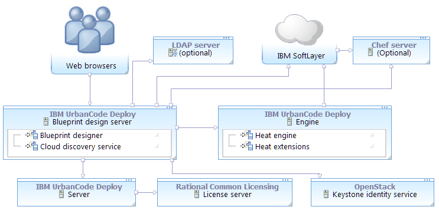

Connecting the blueprint design server to the SoftLayer cloud
To connect the blueprint design server to the SoftLayer® cloud system, map the SoftLayer account information to a functional ID. Then, assign that functional ID to a team.
- Configure the images for use with the blueprint designer. See Configuring private SoftLayer images.
- Obtain a Heat engine and an OpenStack Keystone server. The engine version must match the version of the Keystone server. In most cases for deploying to non-OpenStack clouds, install a Heat engine and Keystone server through HCL® UrbanCode™ Deploy. See Installing an engine in silent mode or Installing an engine in interactive mode.
- Create a functional user account on the Keystone server. This user account must be a member of the administrative tenant on the Keystone server. If you use the Keystone server that was supplied with the engine, you can use the default administrative tenant credentials. The Keystone server's default administrative tenant user name is
adminand the default password isopenstack1. Later, you associate the SoftLayer account information with this functional ID. With this account, users authenticate to the SoftLayer cloud. - Install the blueprint design server. See Installing the blueprint design server.
- Connect the blueprint design server to the server. See Connecting the blueprint design server to the server.
- Configure an authentication realm for the blueprint design server. You can import users from a variety of sources, including LDAP servers, Keystone identity services, the HCL UrbanCode Deploy server, or from the internal authentication realm. See Creating authentication realms for the blueprint designer.
-
Set up a SoftLayer account. This account must have permission to provision and access virtual environments and to access other necessary resources such as SSH keys. In general, give this account the following permissions:
-
Support
- View Tickets
- Search Tickets
- View Tickets by Hardware Access
- View Tickets by Virtual Server Access
- Add Tickets
- Edit Tickets
- View All Tickets
- Devices
View Hardware Details
View Virtual Server Details
Manage Device Monitoring
Reboot server and view IPMI system information
Upgrade Server
Edit Hostname/Domain
Issue OS Reloads and Initiate® Rescue Kernel
Manage Port Control
-
Network
View Bandwidth Statistics
Add IP Addresses
-
Services
Manage SSH Keys
Manage Provisioning Scripts
Manage Public Images
-
Account
View Account Summary
Add/Upgrade Cloud Instances
Cancel Server
Cancel Services
Reset Password
Add Storage
Add/Upgrade Services
Add Server
Also, in the SoftLayer account settings, specify that this account has access to new images. In the setting When new devices are added, specify Always add them to this account automatically.
-
-
Install the blueprint design server. See Installing the blueprint design server.
-
Ensure that the blueprint design server can connect to the SoftLayer cloud. For example, make sure that no firewall, proxy, or security settings prevent communication between the blueprint design server and the cloud. You can verify the connection path with the curl command, as in the following example:
curl --user user\_name:API\_key https://api.softlayer.com/rest/v3/SoftLayer_Account/SshKeysUse your SoftLayer user name for
user\_nameand your API key forAPI\_key.
The following diagram shows a typical topology for this scenario. The blueprint design server and engine connect to the SoftLayer cloud. For authentication information, the blueprint design server connects to the Keystone identity service and optionally to an LDAP server.
- Log in to the blueprint designer as a user with the following System permissions:
- Configure Security
- Manage Users & Groups
- Create a connection to the cloud:
- Click Settings > Clouds.
- Click Add New Connection.
- Specify a name for the cloud connection.
- In the Type list, select SoftLayer.
- Click Save.
- To create a cloud project, see Creating cloud projects for the blueprint designer.
- Add the cloud project to a team. See Configuring blueprint design server teams.
- Add users to the team and to one or more roles on the team. These users can come from any authentication realm, including LDAP servers, Keystone identity services, or from the internal authentication realm.
- Make sure that the team roles include the appropriate permissions for those users, such as creating and editing blueprints.
Users can log in to the blueprint designer and use the cloud connection. At the top of the page, users can select the SoftLayer cloud connection, cloud project, and region. When they edit blueprints, the palette shows resources that are available to the SoftLayer account, and they can provision blueprints to the selected SoftLayer region. The palette shows all custom images that you upload to the SoftLayer cloud. To use a public image or a default image on the SoftLayer cloud, provision a VM from the image, and configure it for use with the blueprint designer. See Configuring private SoftLayer images.
- To accommodate variations in the responsiveness of the SoftLayer cloud, configure the timeout value. See Configuring the timeout value for SoftLayer clouds.
- Configure flavors for the cloud. See Configuring SoftLayer image flavors.
Parent topic: Connecting to the SoftLayer cloud